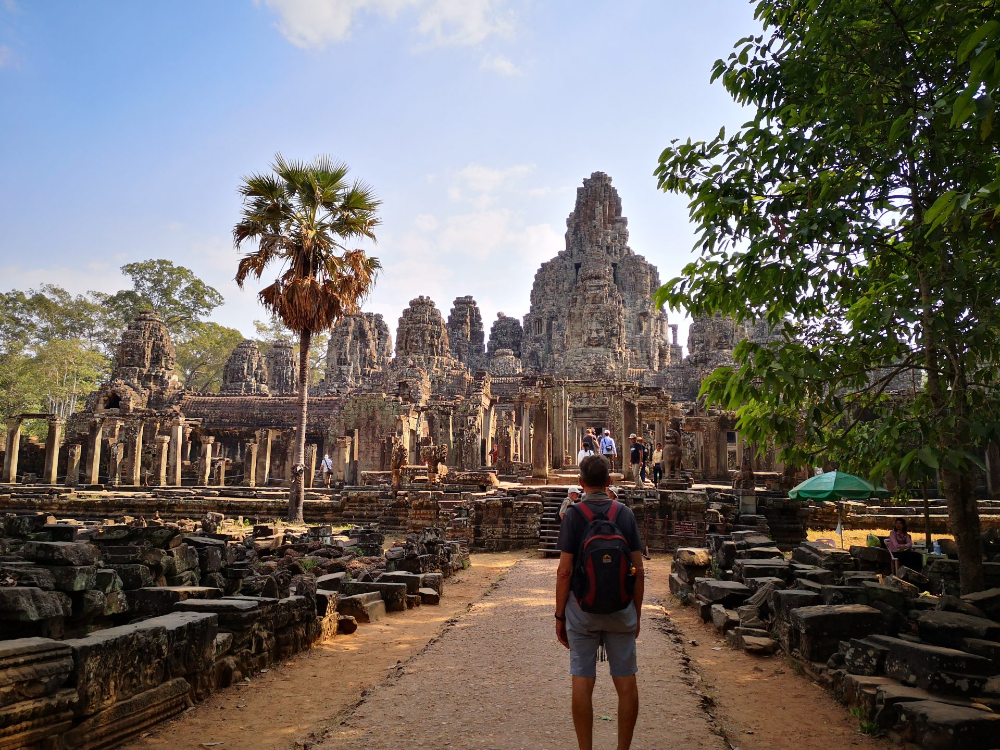
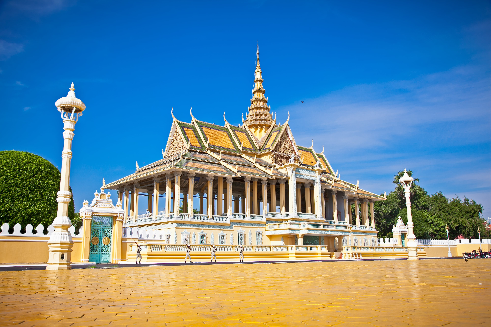
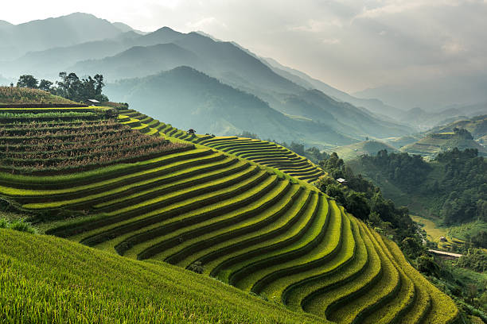
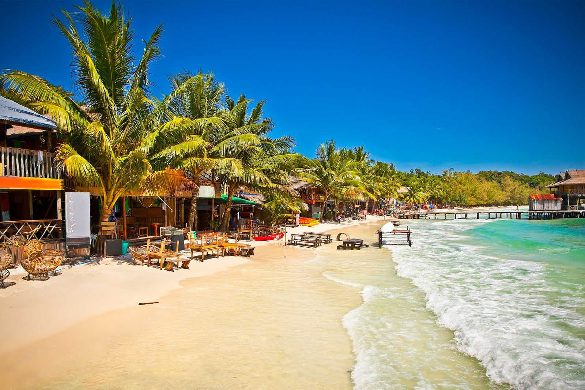
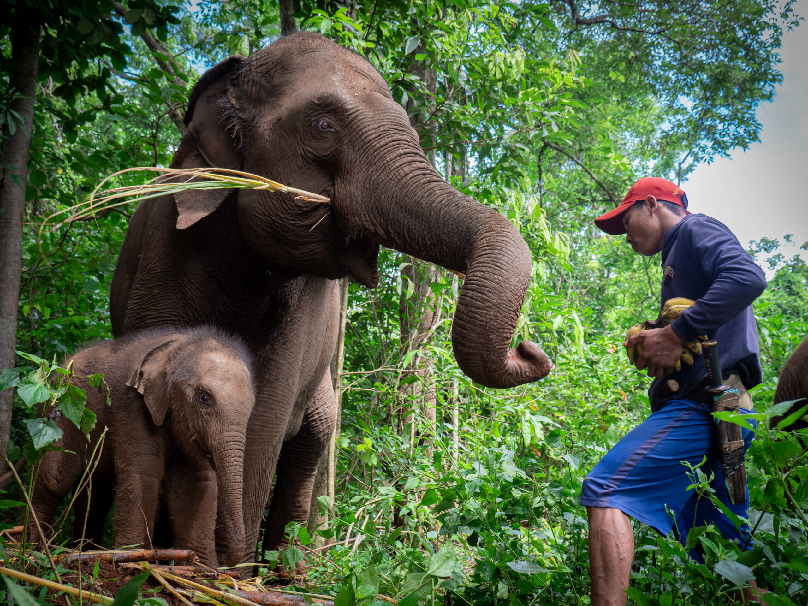
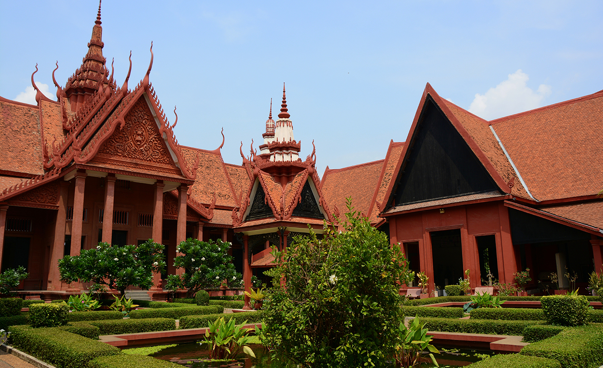
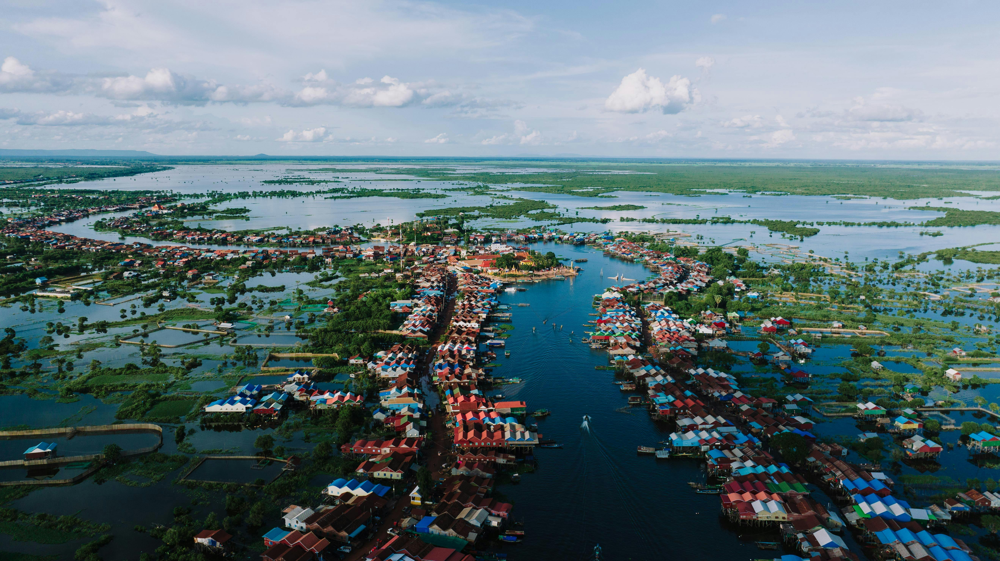
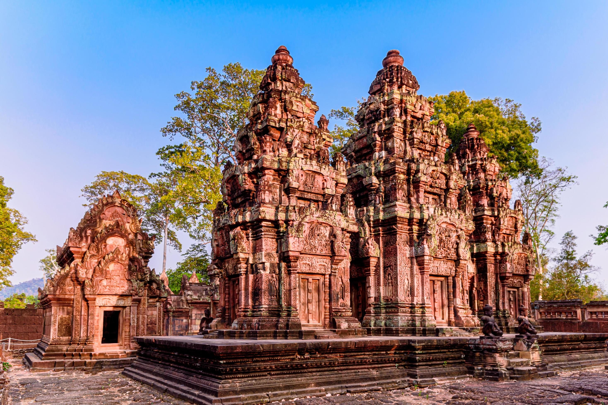

Highlights
Popular Destinations









Cambodia draws travelers who understand that the most meaningful journeys ask for the heart as much as the mind. It is a destination for those who seek depth rather than distraction, for people who are moved by culture, humanity, and history in all their complexity. Here, every corner invites reflection, and every encounter feels personal.
Authenticity in Cambodia is not curated; it is lived. Imagine ancient temples where monks still chant softly at sunrise, their voices echoing through sacred stone corridors. Picture silk weavers whose artistry carries stories of endurance and hope. In the villages and cities alike, resilience breathes through daily life, shaping experiences that move beyond beauty to something profoundly human. Cambodia is not simply visited; it is felt, remembered, and carried with you long after you leave.
This is where you discover that the most unforgettable adventures unfold in the quiet, unplanned spaces between moments. It might be the taste of num banh chok perfected by generations, served from a humble street cart, or the serene temple blessing that turns into a meditation on gratitude and time. Cambodia reminds travelers that the truest experiences are never rushed; they reveal themselves when you slow down enough to see them.
Here, wonder lives in the rhythm of everyday life. One day you might find yourself tracing centuries-old carvings of Angkor's temples, and the next, cycling through rice paddies alongside farmers whose stories are written in perseverance. You will learn that hospitality here is not performance but instinct, offered with sincerity that stays with you. Cambodia does not simply invite you to visit; it challenges you to open your heart.
Here, paradise reveals its depth slowly. You may stand before a temple wrapped in roots, or share laughter with locals who have turned endurance into joy. The landscapes hold secrets older than memory, and the people transform every hardship into a quiet kind of hope. From the sunrise over Angkor's faces to the floating villages that rest lightly on the water, each scene tells a story of persistence and grace. Cambodia does not simply impress; it moves you, feeds your spirit, and leaves its rhythm echoing long after you depart.
Explore markets filled with handwoven silk, silverwork, and carvings that honor tradition. Take home Kampot pepper or handmade pottery while supporting local artisans and fair trade cooperatives.
Taste Cambodia's bold flavors with crab curry, lemongrass soups, and sticky rice wrapped in banana leaves. Each bite reflects heritage, heart, and home.
Sip iced milk coffee, palm wine, or fresh tropical juice. Every drink captures the warmth and rhythm of Cambodian life.
Move easily between Cambodia's major cities by bus, shared taxi, or domestic flight. For a more scenic journey, travel by boat along the Tonle Sap or Mekong River and watch daily life unfold along the shores.
Tuk-tuks, motorbike taxis, and bicycles make short trips convenient. City centers are often walkable, while temples and rural sites may require guided transport.
Venture beyond urban areas to explore coastal towns, mountain trails, and traditional villages. Local guides and private drivers make discovering Cambodia's natural beauty effortless and enriching.
Indochina Time (ICT), which is GMT+7. No daylight saving time observed.
Grab is the primary rideshare app (cars, motos); local tuk-tuk apps also exist; metered taxis are rare outside Phnom Penh.
Cambodia uses 230V electricity with a frequency of 50Hz. Outlets typically support plug types A, C, and G, so travelers may need a universal adapter.
Tropical monsoon climate with dry season (November–April) and wet season (May–October). Cool season (November–February) is most pleasant.
Cambodia's ancient temples were famously featured in Lara Croft: Tomb Raider, sparking a surge in tourism to Angkor Wat. The country has produced celebrated filmmaker Rithy Panh, known for his work spotlighting Cambodian history and resilience.
Emergency Services: 117
Police: 117
Medical Emergency: 119
Tourist Police: 012-942-484
Country Code: +855







